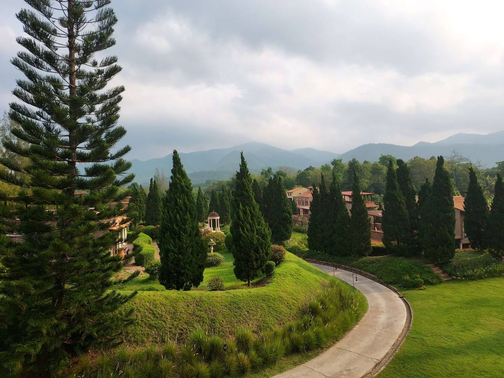

Plantation de haies
Haies champêtres ou persistantes, plantées à la bonne distance et à la bonne densité.
Plantations · Clôtures · Remise en état
Une haie qui se dégarnit, un arbre à remplacer, une clôture à la place d’une haie vieillissante : on transforme votre extérieur pour qu’il soit plus beau et plus simple à vivre.

Nos prestations
Haies champêtres ou persistantes, plantées à la bonne distance et à la bonne densité.
Arbre d’ombrage, fruitier ou arbre de remplacement, avec tuteurage et paillage pour une bonne reprise.
Préparation du sol, semis ou regarnissage des zones abîmées de la pelouse.
Création ou rajeunissement de massifs, avec des arbustes adaptés à l’exposition.
Jardin négligé, après travaux ou au moment d’un achat : on remet tout à plat.
Arrachage d’une haie vieillissante et pose d’une clôture : plus net, plus pratique, moins d’entretien.

Essences locales
Pour une haie vivante et facile à vivre, rien ne vaut un mélange d’essences locales.
Charme, érable champêtre, noisetier, cornouiller sanguin, viorne ou troène commun résistent au climat francilien, nourrissent les oiseaux et demandent peu de soins.
« À la Sainte-Catherine, tout bois prend racine »
Nous regardons le sol, l’exposition et l’espace disponible, puis choisissons les végétaux avec vous.
Désherbage, décompactage, amendement si nécessaire : la reprise se joue ici.
De novembre à mars, hors gel, au moment où les racines s’installent le mieux.
Tuteurage, paillage et conseils d’arrosage pour passer sereinement le premier été.
Questions fréquentes
La meilleure période va de novembre à mars, hors périodes de gel. Les végétaux en conteneur peuvent être plantés plus tard, mais demandent davantage d’arrosage.
Le Code civil (art. 671) impose 2 mètres pour une plantation destinée à dépasser 2 mètres de haut, et 50 centimètres pour les plantations plus basses, sauf règlement local contraire.
Oui, surtout la première année : un arrosage copieux à la plantation, puis régulier en cas de sécheresse. Le paillage aide à garder l’humidité au pied.
Haie, arbre, clôture, pelouse ou jardin entier : décrivez-nous votre projet, nous venons en parler sur place.